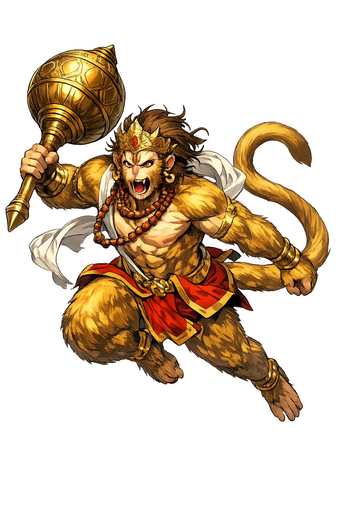

The Authentic Orthography
Devotion, Strength, Messenger · ‘having (large) jaws’, N. of a monkeychief (one of the most celebrated of a host of semidivine monkeylike beings, who, according to R. i, 16, were created to become the allies of

Unicode restoration and ASCII comparison
हनुमान्
The name in its original Sanskrit form. Hanumān (हनुमान्) is attested in the source tradition — “‘having (large) jaws’, N. of a monkeychief (one of the most celebrated of a host of semidivine monkeylike beings, who, according to R. i, 16, were created to become the allies of”. Its macron-length vowels carry the full phonetic and orthographic weight of the source tradition.
hanuman
Reduced to plain hanuman, the name loses everything that made it specific: macron-length vowels. What remains is an ASCII string that machines can parse but that no longer speaks with its original voice.
Hanumān
The Unicode restoration recovers what ASCII flattened. Hanumān restores macron-length vowels, returning the name to its original written dignity. The domain encodes to Punycode, but the browser displays the truth.
Hanumān.com → xn--hanumn-7za.com
The non-ASCII characters in Hanumān are encoded while the ASCII remains visible. To the DNS, it is Punycode. To humanity, it is Hanumān.
How Hanumān travels from ancient script to the modern URL
How Hanumān was spoken
Devotion, Strength, the Leap, and the Burning of Laṅkā
Hanumān is India's god of what devotion makes possible: the monkey-general who leapt an ocean in one bound, carried a mountain across the sky, and burned the demon-king's golden city — and who remains, of all the pantheon, the one most loved by ordinary people.
One bound from India to Laṅkā — devotion as the only wings needed.
The herb-mountain he carried through the night sky to save Lakṣmaṇa.
Set alight by Rāvaṇa — and used to torch golden Laṅkā itself.
His mace: strength in service, never for its own sake.
Stories of Hanumān
Hanumān's myths are the Rāmāyaṇa's engine: whenever the quest seems lost, the wind-god's son does the impossible, quietly, as service.
Born of Vāyu, the wind-god, and the vanara Añjanā, he mistook the rising sun for a ripe fruit and leapt to eat it; Indra's bolt broke his jaw (hanu) and sent him back to earth, where the gods compensated the child with gifts: invulnerability to weapons, fire, and water, and strength matched to no one. The broken jaw that named him became the mark of the god who cannot be stopped.
When Sītā was taken, the vanara army stood on the shore, and only Hanumān dared the crossing: he grew until the sky bent, leapt the hundred yojanas, and landed on Laṅkā's walls — shrinking to search the golden city street by street until he found her in the Aśoka grove. "I am Rāma's messenger," he told her, and gave the ring; the war began from that whisper.
Caught and paraded, his tail wrapped in oil-soaked rags and lit, he did not extinguish it: he grew, broke free, and used the fire as a torch — leaping roof to roof until golden Laṅkā burned behind him, then quenched the tail in the sea. The lesson the epics love best: what your enemy kindles for your shame, carry as your weapon.
Lakṣmaṇa lay dying; only the herbs of the Himālayan mountain could save him, before dawn. Hanumān flew north, and finding the herbs beyond naming, tore out the whole peak and carried it home through the night sky. The scene — the small flying figure, the mountain in one hand — is the most reproduced image in Indian devotional art, and his temples sell it to this day.
Hanumān is the god of the impossible errand. He never asks whether the ocean can be crossed — he asks for Rāma's name and jumps. He is the proof the Rāmāyaṇa makes everywhere it goes: that the measure of strength is not what it can lift but whom it serves, and that the biggest tasks are always done by the ones who say "I am only the messenger."
Enter Extended Lore